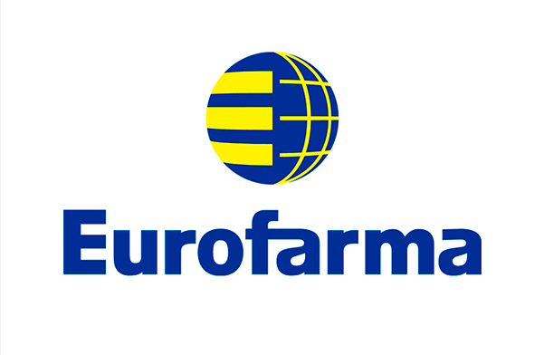

IntegraAdmin: Gestão de funcionários com controle e
apontamentos de horas, envio de notas e email's. Projeto NodeJS com NestJs, TypeScript, TypeORM
e banco de dados PostgreSQL.

Abrafarma: Controle de informações sobre eventos, palestras e palestrantes.
Desenvolvimento experimental utilizando a plataforma CronApp Low/Hi code.

VitrineLinks: Visualização e comercialização de produtos e cursos pela Eduzz / Select.
Aplicação
NodeJs, TypeScript e banco de dados PostgreSql com Docker.
- 
Voary: Gerenciamento de candidatos com controle completo de fases com envio de emails.
cliente Eurofarma. Aplicação NodeJs com TypeScript, Prisma e banco de dados PostgreSql com
Docker.

CentralService: Gerenciamento de Ordem de Serviços, Estoques, Clientes e Funcionários
voltado ao setor de equipamentos hospitalares aplicação com NodeJs, NestJS, TypeORM e banco de
dados PostgreSQL com Docker.

BrengaTech: Gerenciamento de Ordem de Serviços, Pagamentos, Estoques, Clientes, Oficinas
parceiras e Funcionários
voltado ao setor automibilistico aplicação NodeJs com JavaScript e banco de dados PostgreSql.
-
Estacionamento: Projeto Backend para um serviço de estacionamento com CRUD completo para controle
de Veiculos e Atividade utilizando banco não-relacional Sqlite,
JavaScript e Express.

Jogo Multiplayer: Projeto de um Jogo multiplayer com JavaScript, SocketIO para
comunicação sentre Server e Client, manipulaçao de DOM. Projeto Felipe Dechamps.
-
Site Google-Glass: Projeto de criação de um Site com JavaScript, HTML e CSS para venda do
Google-Glass. Curso em Video com Gustavo Guanabara.

Site SS-Produções: Projeto pessoal de criação de um Site para treinamento de JavaScript, HTML,
CSS,
manipulação de dados, imagens, audio, videos e animações.
-
Projeto de uma Aplicação back-end que conecta a API do GitHub seleciona os
Repositórios mais bem avaliados de uma lista de linguagem e exibe com metodo para favoritar /
desfavoritar - JavaScript, Axios, Express e PostgreSQL com Docker.
-
Projeto de criação de Aplicações para Login com diferentes Abordagens, Layout's, Validações
de Campos, CRUD, criptografia de senhas, manipulação de Docker/Docker compose, LocalStorage.
-
Projeto de Aplicação Simulada de "Conta Poupança" com depósito, saque e extrato
utilizando JavaScript e HTML.
-
Projeto de uma Calculadora
utilizando JavaScript, HTML e CSS. CFB Cursos Prof. Bruno.
-
Projeto de uma Aplicação para Calculdo de IMC com JavaScript, HTML e CSS.
-
Projeto de uma Aplicação para Radar de velocidade com cálculos de pontuação,
JavaScript ,HTML e CSS.

Projeto de criação de um Portifólio para auxiliar na recolocação no mercado de trabalho,
JavaScript ,HTML e CSS.

Projeto de estudo Testes TDD com Jest , JWT para authenticação de rotas, Banco Isolado Sqlite3 e
Postgress.

Projeto de estudo MongoDB banco NOSql com Atlas banco em Nuvem com NodeJS, Express, Nodemon ,
Mongoose com CRUD APIRest e Verbo HTTP.
-
Projeto de estudo Graphql com NestJS e TypeORM utilizando banco Postgress local com a ferramenta
PG-Admin.
-
Projeto de estudo Serverless com NodeJS, Prisma e banco Postgres em nuvem com Servidor Elephant.
-
Projeto de estudo Mysql com Workbrench em NodeJS.

Aplicação Agenda de contatos desenvolvida com Javascript, HTML, CSS, framework Node-red e Banco
de dados com
Wampserver64.